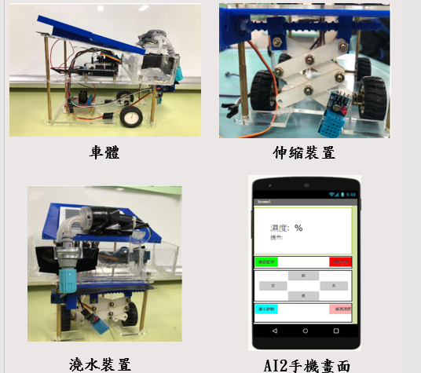

專題-手語辨識
目前手語對於聾人族群是非常重要的溝通工具，一般人學會了手語代表又多一種能與人溝通的方法，所以我 希望能經由Teachable Machine來訓練模型，搭配PYTHON來完成作品，即使身邊沒有人，只要透過輸入大量圖片資料、訓練模型之後，就可以隨時練習。
專題-農業自走車
研究目的:我們想設計設計一款藍芽遙控車，能累積雨水作為灌溉的來源，並且車頂裝載太陽能板以提供車所需要的電力 。主要功能是偵測土壤濕度，提示使用者是否需要澆水，想讓使用者能坐在遠處休息的同時，完成澆水這個動作，將其自動化，考量到作物的多種影響 ，把是否澆水的最後選擇權留給使用者。既能避免農民操作器具帶來的傷害，也能有效減少與農藥的接觸。
